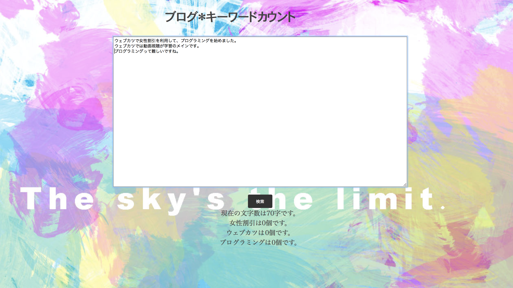
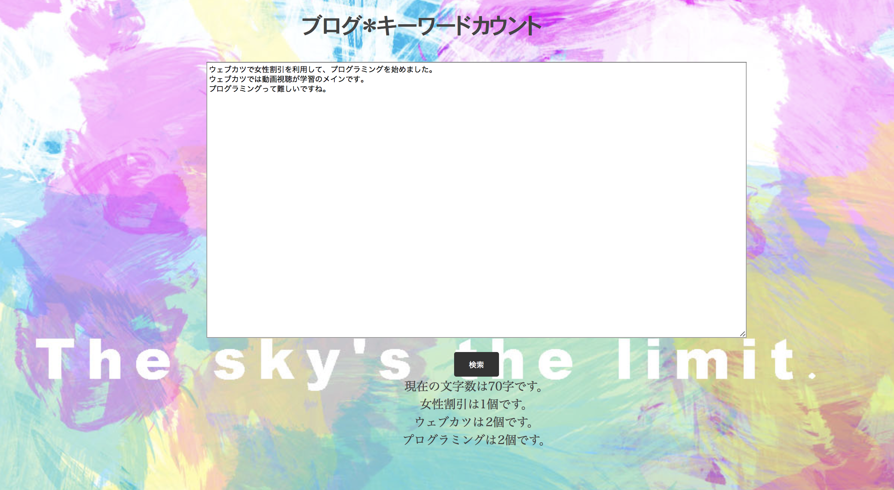
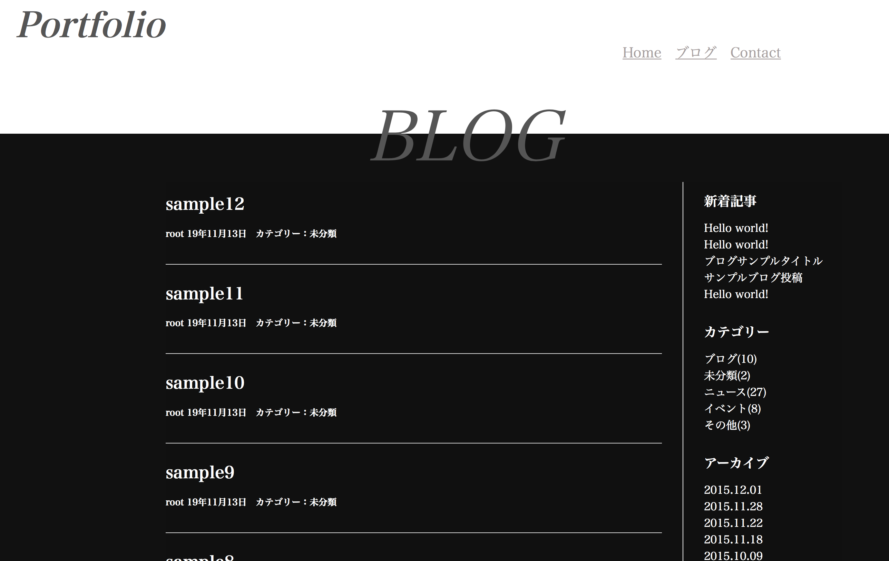
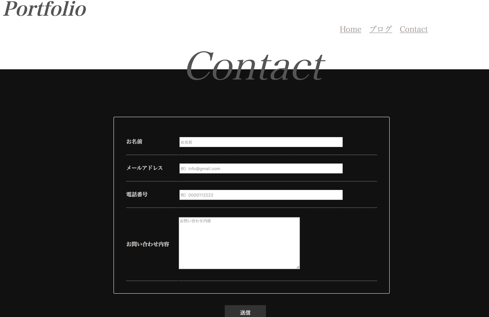
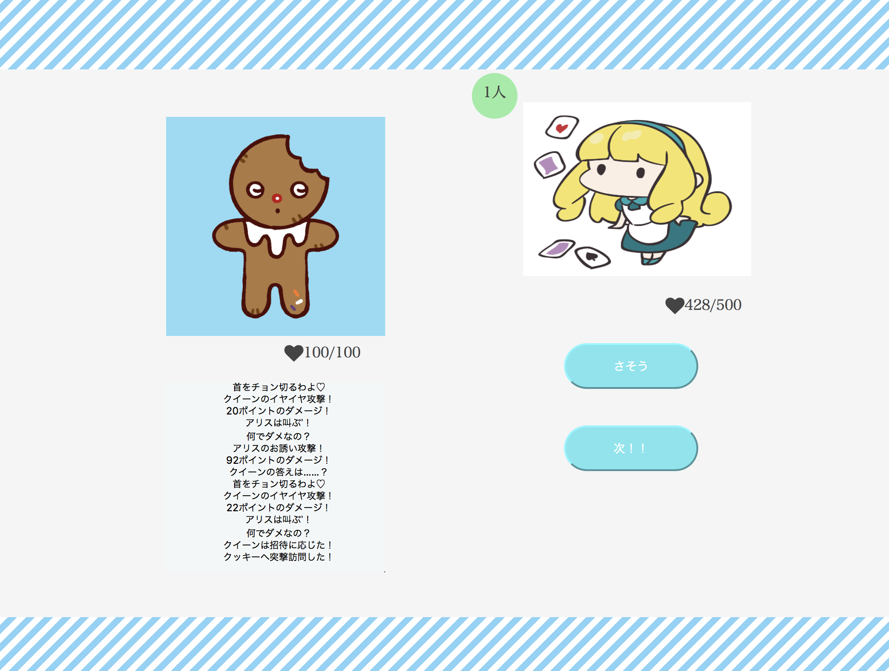
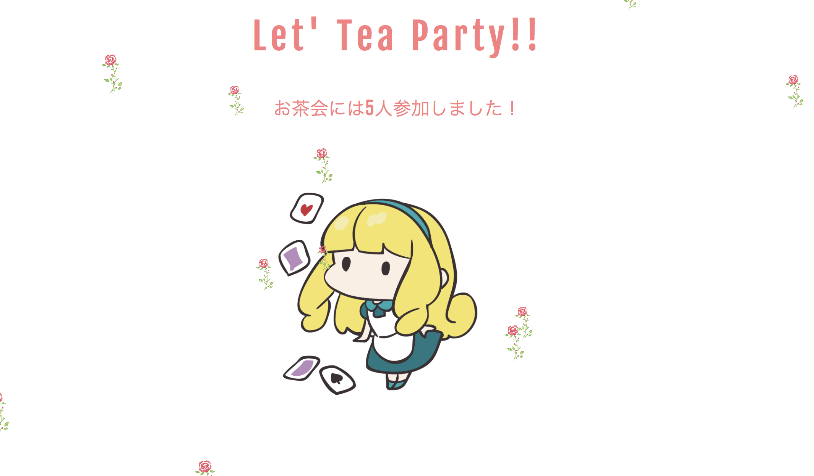
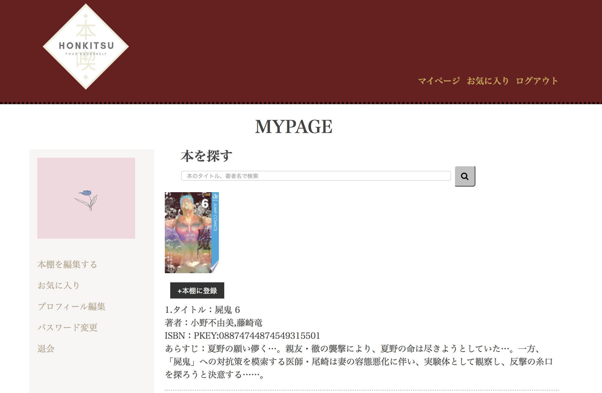
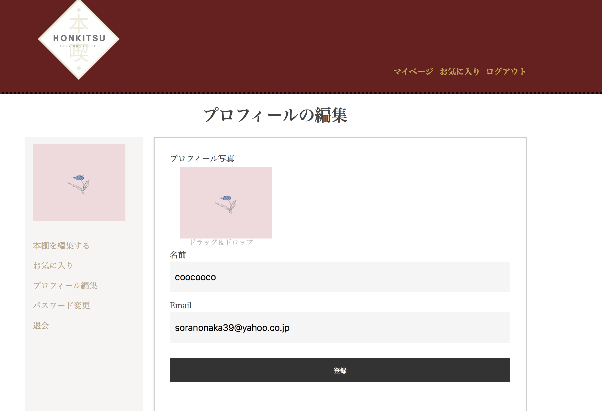
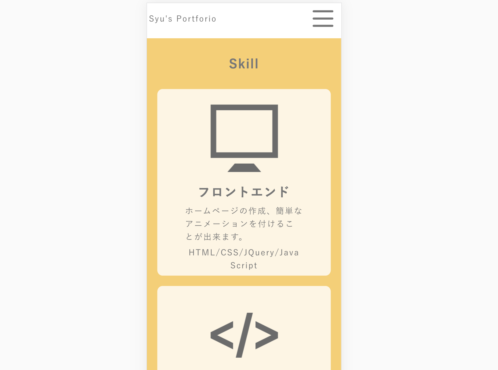
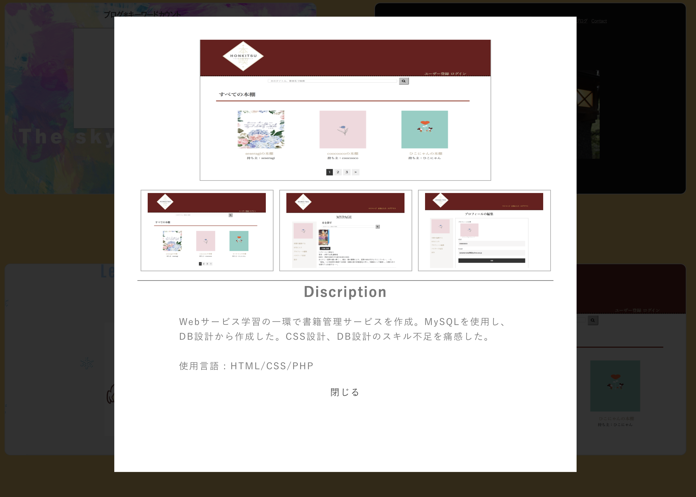

About
- 名前 : SYU
- 年齢 : 29
- 出身地 : 愛知県
- 趣味 : 旅行、読書、写真
大学卒業後、地元のスーパーに就職しました。
4年間勤務した後、手に職をつけるため、IT業界へ転職を決意しました。
現在は名古屋のSESで業務アプリケーションの改修に従事しております。
2019年５月よりフロントサイドの学習を開始。
お客様に寄り添えるようなエンジニアになりたいです。
Skill
フロントエンド
ホームページの作成、簡単なアニメーションを付けることが出来ます。
HTML/CSS/JQuery/JavaScript
バックエンド
簡単なWebサービスの仕組みが作れます。改修、テストが可能です。
Java/PHP
その他
開発を便利にするツールやフレームワークを習得中です。
Wordpress/Sass/git
Works
read more...
read more...
read more...
- 
- 
Discription
JavaScriptの練習のため作成。ブログ作成のため、文字数と特定のキーワードをカウントすることが可能。
使用言語 : HTML/CSS/JavaSctipt
- 
- 
Discription
Wordpressの簡単なテーマ作成。繰り返し処理など、独特な関数や構造理解を目指した。
使用言語 : HTML/CSS/PHP
- 
- 
Discription
オブジェクト指向理解の一環として簡単なゲームを作成。残りHPやキャラクターによって動きに変化を付けた。
使用言語 : HTML/CSS/PHP/JavaScript/JQuery
- 
- 
Discription
Webサービス学習の一環で書籍管理サービスを作成。MySQLを使用し、DB設計から作成した。CSS設計、DB設計のスキル不足を痛感した。
使用言語 : HTML/CSS/PHP
- 
- 
Discription
Sass、CSS設計の練習も兼ねて作成。保守性を意識して書いた。レスポンシブ対応の練習にもなった。
使用言語 : HTML/CSS/JavaSctipt/JQuery